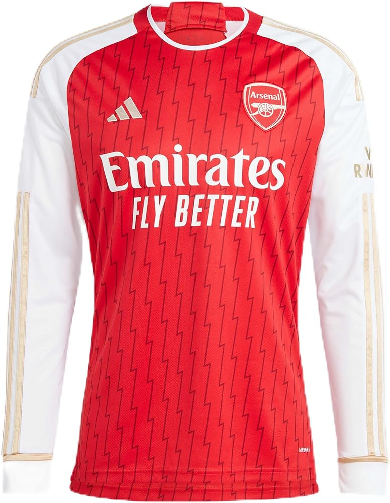
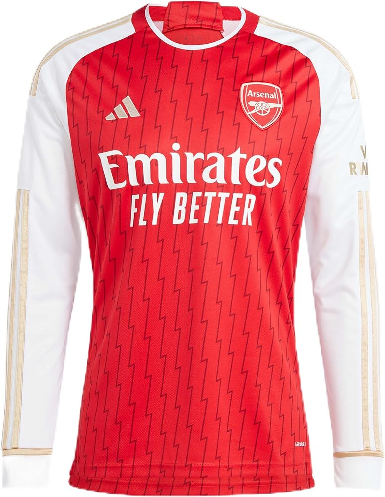

Does the club have a nickname & logo?
Arsenal's nickname is "The Gunners", in honor of the Royal Arsenal munitions factory in Woolwich, south-east London, where the club's founders worked. Its logo, which features the iconic cannon, is also a reference to this factory and the club's history.
What are the club's primary colors?
Arsenal's home colors are red and white for a number of reasons, including a donation from Nottingham Forest (a neighboring football club) and the club's budget at the time of its founding. Shortly after Arsenal was founded in 1886, Nottingham Forest donated red shirts to the club. Due to budget constraints, when Nottingham Forest players joined Arsenal (or Dial FC at the time), they brought their red kit with them. Since the club was on a tight budget, it was cheaper to outfit the entire team in red.
Where does the football club play?
Arsenal FC used to play home games at Arsenal Stadium, also known as Highbury, from 1913 until 2006. Due to wanting a larger stadium that could fit more spectators, the club then moved to Emirates Stadium, a new stadium with a capacity of over 60,000, in the Holloway district of Islington.